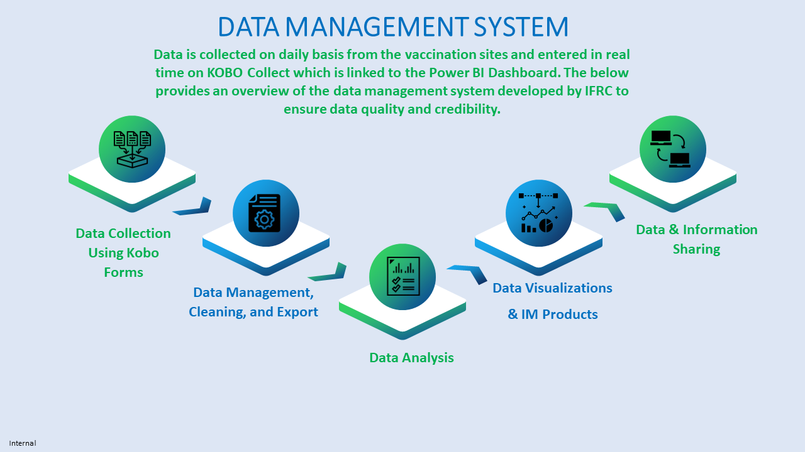

Infographics
This page presents a collection of professionally designed infographics aimed at visually elucidating data collection processes. It also showcases work flow diagrams that outline roles and responsibilities within various projects. Additionally, the page features static data analytical products that provide insightful information and analysis.
